Why it is worth considering
The appeal is not just “near RTS” - it is a walkable, freehold base in the city.
SkyOne sits along Jalan Bukit Chagar, within the city-centre corridor leading to the RTS and CIQ. For buyers who regularly move between Johor Bahru and Singapore, the ability to walk instead of driving to the checkpoint can materially change the daily routine.
Project views
A high-rise city address, not a quiet suburban retreat.
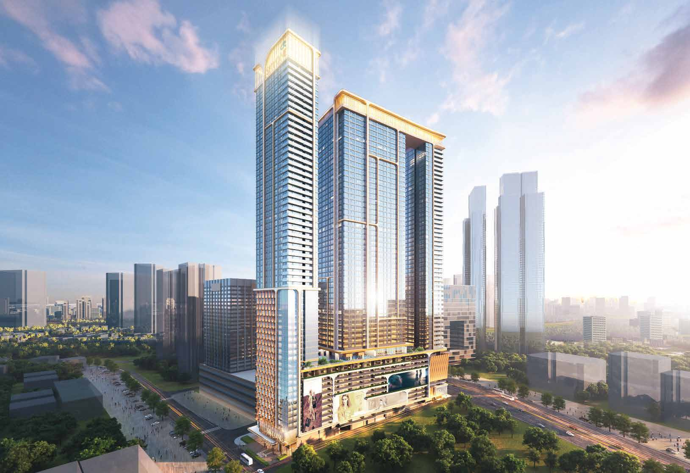
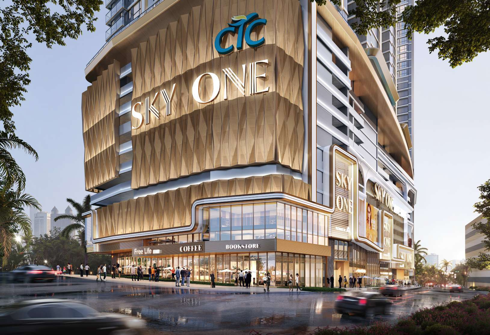
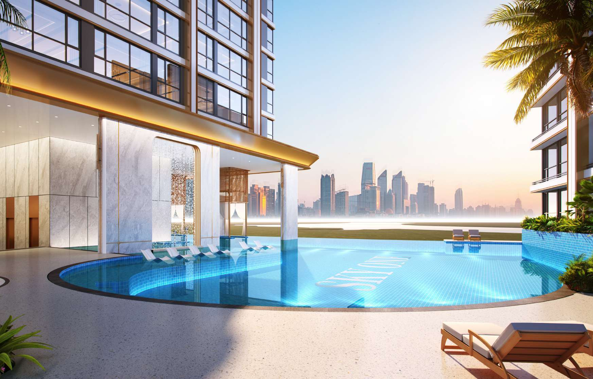
Unit choices
Compact 1+1 layouts through to larger family and penthouse options.
The V3 sales material shows six representative standard layouts. It presents the standard homes under dual-key or triple-key concepts; ask for the exact entrance, partition and usable-room arrangement for the particular stack you are considering.
| Type | Built-up | Layout | Practical use |
|---|---|---|---|
| Type A | 463 sq ft | 1+1 rooms · 2 baths | Lowest-space option; check storage and real furniture fit |
| Type B | 506 sq ft | 1+1 rooms · 2 baths | Compact own-stay or separated-use plan |
| Type C | 549 sq ft | 1+1 rooms · 2 baths | More breathing room within the 1+1 range |
| Type E | 710 sq ft | 3 bedrooms · 3 baths | Room-count efficiency; verify bedroom dimensions |
| Type F | 893 sq ft | 4 bedrooms · 3 baths | Families or multi-room rental strategy |
| Type G | 1,270 sq ft | 3 bedrooms · 3 baths | Larger living spaces and household separation |
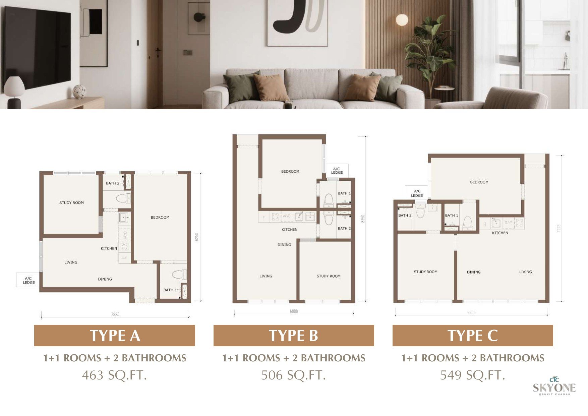
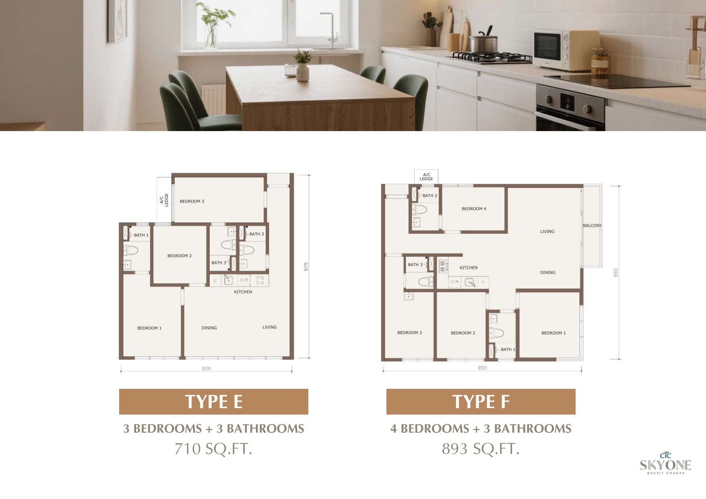
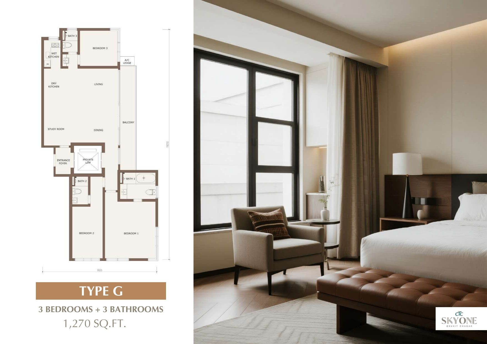
Penthouse sizes are stated as 1,626-1,646 sq ft in the V3 material, but detailed penthouse plans were not included in the representative plan pages. Request the full plan before comparing price per sq ft.
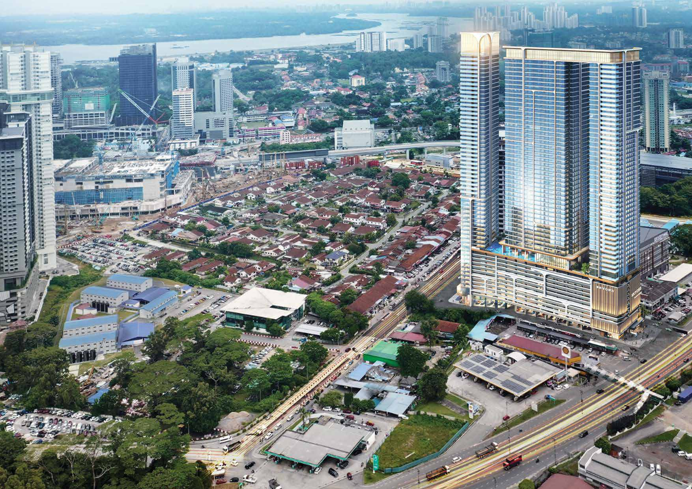
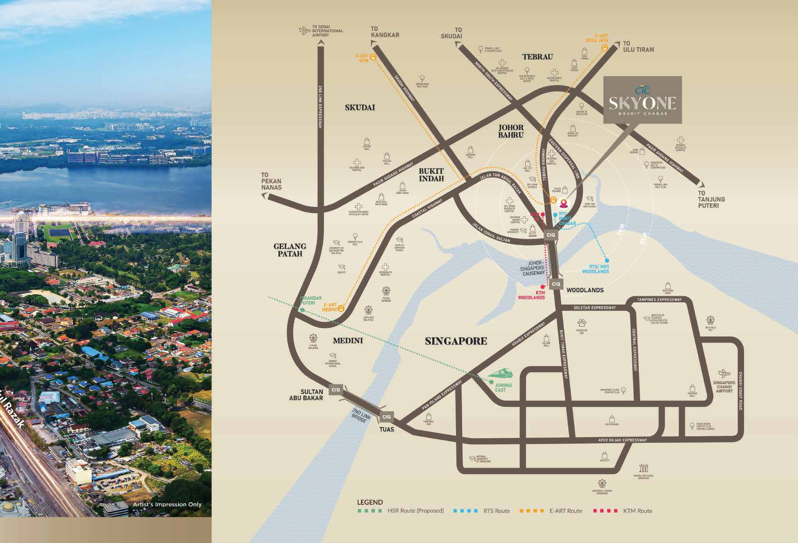
Location & daily life
The project is designed around walking to cross-border transport.
The supplied route illustration states approximately 300 metres to Bukit Chagar RTS. Nearby retail in the current project material includes SKS City Mall at about 73m and OBS Mall at about 280m, while KOMTAR JBCC and City Square are listed at roughly 1.7km and 1.9km.
- Potentially practical for regular Singapore commuters who want a JB base
- City-centre groceries, dining, healthcare and services are closer than in a suburban township
- 22 on-site retail units are planned, but the eventual tenant mix is not yet something to assume
- Verify the actual sheltered or unsheltered walking route, crossings and access points before buying
- Expect a busier, denser urban environment with city traffic and construction activity
Facilities on Level 12
Resort-style facilities are useful only if they match your routine - and the monthly cost.
The facilities plan is organised around “Sea, Island and Mountain” zones, with pool, family, activity and quieter landscape areas. Buyers should still ask for the final facilities schedule, operating rules and maintenance-fee calculation.
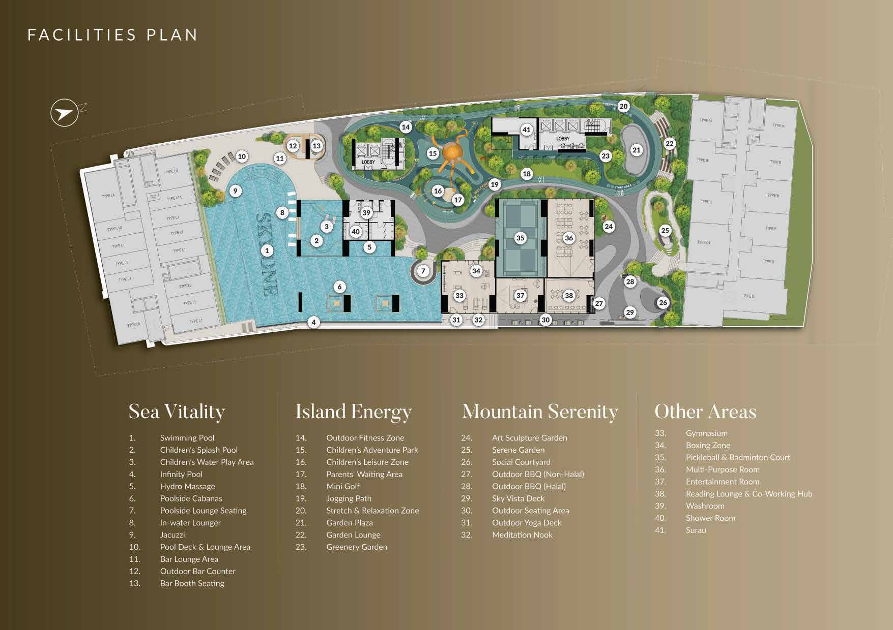
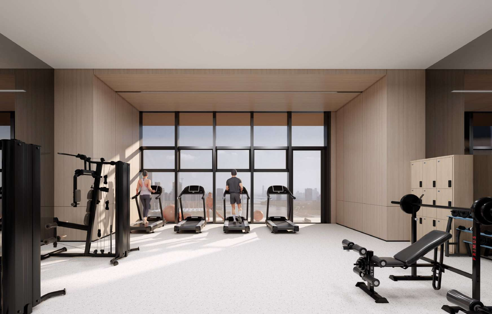
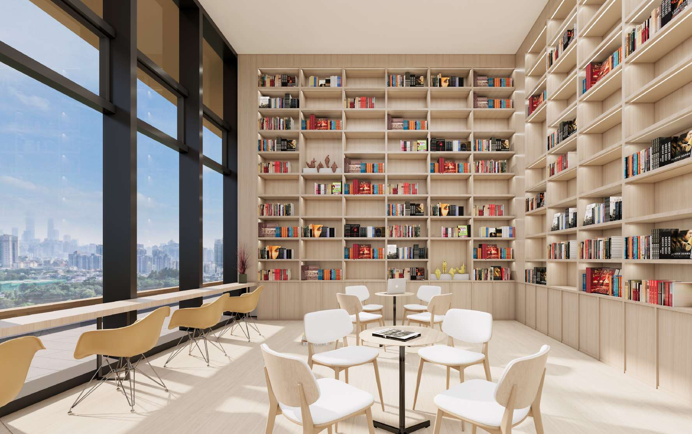
Buyer fit
A strong match for a narrow buyer profile - not for everyone who likes the RTS story.
Worth considering if you...
- cross between Johor Bahru and Singapore regularly and value a walkable RTS route
- want freehold tenure in the JB city-centre market
- can use a dual-key or triple-key arrangement for privacy, family or flexible occupancy
- prefer city convenience over a larger landed home or a quieter township
- are comfortable comparing purchase price with maintenance, furnishing and holding costs
Look elsewhere if you...
- want a low-density residence - 1,605 homes on about 1.64 acres is a large community
- need a conventional residential title rather than commercial strata
- prefer large bedrooms and living spaces over a high room count
- need confirmed rental income or quick appreciation to make the purchase work
- want to move in immediately; confirm completion and handover timing before planning around it
Continue your comparison
Useful guides and nearby city-centre options.
Latest project information
Check the exact unit and full cost before arranging a viewing.
Tell me your budget, household plan and how often you travel to Singapore. I will share the latest available units, price breakdown, floor plans, maintenance information and sales package, then explain which layout is actually worth viewing.
Project facts and artist impressions are based primarily on the supplied CTC SkyOne Sales Kit V3 dated July 2026 and were cross-checked against the current SkyOne project reference website in September 2026. Pricing, unit availability, maintenance charges, completion details, views, walking routes, retail tenants and specifications can change. Confirm the latest developer-issued documents, approved plans and SPA before making a purchase decision.